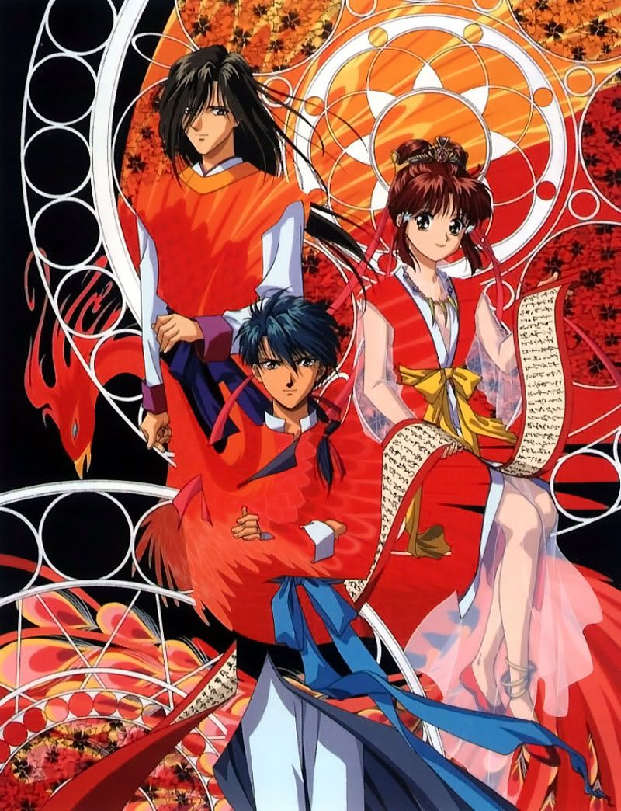

Fushigi Yuugi
Główną bohaterką anime Fushigi Yuugi jest 15-letnia Miaka Yuki, która trafia w bibliotece na książkę pod tytułem
"Księga Czworga Bóstw". Po przeczytaniu pierwszych słów księgi dziewczyna przenosi się do innego świata. Tam dowiaduje się,
że jest kapłanką boga Suzaku i ma za zadanie ocalić świat księgi przed innym bogiem. Tymczasem przyjaciółka Miaki, Yui Hongo,
również trafia do zaczarowanego świata i zostaje kapłanką Seiryu - boga, którego pokonanie jest celem Miaki. Obydwu dziewczynom
zawraca w głowie przystojny i młody Tamahome, będący wojownikiem Suzaku.
Chłopak kocha oczywiście Miake, toteż dawne przyjaciółki stają się wrogami.
